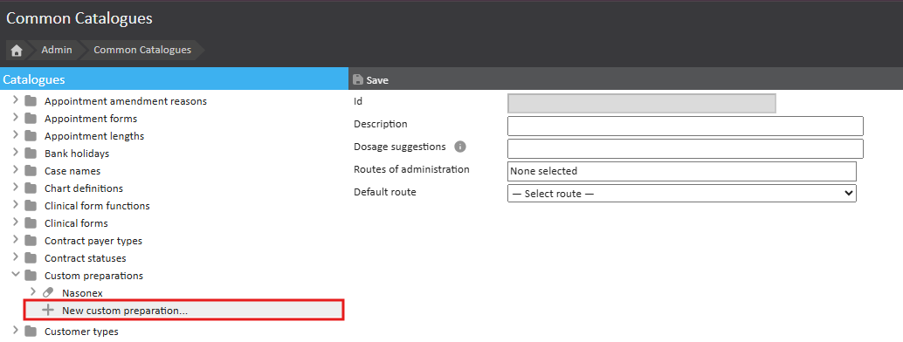
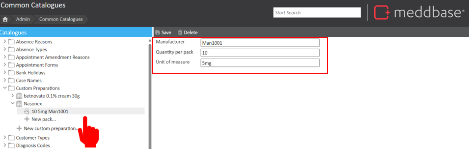
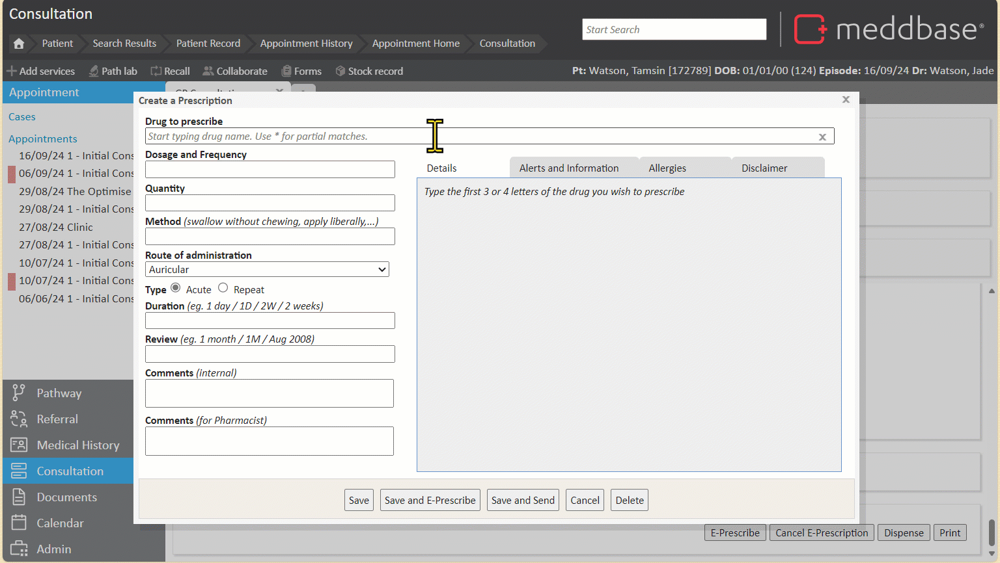

Meddbase has a built-in integration with First Data Bank who offer a centralised drugs database of over 70,000 drug products and packs for prescribing. First Data Bank also provides Clinical Decision Support (CDS) when prescribing in Meddbase through their Multilex Engine
When a specific drug or formulation is missing from FDB’s database, Meddbase allows users to create custom preparations. This feature enables the addition of unique medications or modifications of existing medications to meet particular patient needs or regional practices.
WARNING
Custom preparations in Meddbase are not covered by Clinical Decision Support (CDS). This means that any medications created as custom preparations will not trigger CDS warnings, such as alerts for drug interactions or contraindications. CDS features—including preparation warnings—are exclusive to medications prescribed directly from the First Data Bank (FDB) database. Therefore, when using custom preparations, clinicians should be aware that they won’t receive automated safety alerts from the Multilex Engine, emphasizing the need for extra caution in these cases.
This article provides a step-by-step guide to creating custom preparations within your chamber.
To add a custom preparation in Meddbase, follow these steps:

Once your custom preparation has been created, it can be expanded to offer a "New Pack".
Multiple Packs can be made for each of our Custom Preparations allowing for the creation of custom amounts and measurements of each type of medication you add or dispense. All Packs for each Custom Preparation can be found on the left-hand side.

Now that you have created your custom preparation and the relevant packs, you can prescribe it just like any other medication in Meddbase. This means you can search for your custom preparation within the prescribing module, select it, and choose the appropriate pack to use for your patient.
When prescribing, enter the text of your custom preparation and look for bold text in the drop-down list. This indicates the medication is from your pre-defined list of custom preparations.
Once you have selected your drug, complete the prescription fields as usual and save.
